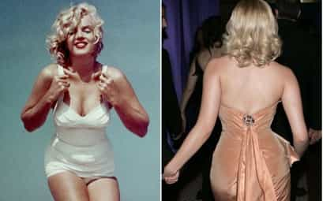
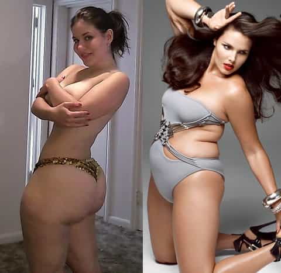
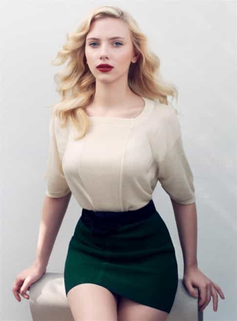
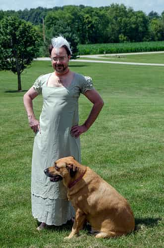

Pill Scout is an independent writer at PillScout.com covering nootropics and supplements, and Anarcho-Introvert, a site for lifehacks, game and philosophy for introverts.


Men all have their select preferences for what they find attractive in a woman, like hair color, skin tone, the way she wears her makeup, and so on. The most common factor however comes down to body shape. The fact is that men in civilized, economically stable nations prefer women with true hourglass curves, whether or not they will admit it. Not fat girl “curves,” but real curves — the kind that come from being health-minded and fit — not the kind of rolls, “curves,” or bulges that come from Twinkie hoarding.
An “hourglass” figure on a woman, for those who are unfamiliar, is similar to an hourglass or a classic glass Coca-Cola bottle in shape. This means decent boobs, small waist, and big butt, usually with the waist being 7:10 to the hips and/or bust. It’s measurable beauty that delights the senses.

Look at the photos above. Marilyn Monroe (left) measures up to 34-24-34, a far cry from the size 12+ that obese ladies claimed she was. Scarlett Johansson (right) measures up to 36-25-36, with similar hourglass proportions to Marilyn. It’s safe to say that both women were blessed with beautifully proportioned hourglass figures.
Numbers or not, if a man were given the option he would choose the girl who had a true curvy body in addition to symmetrical facial and bodily features that advertise good immune and developmental health. To me, being exclusively a “tits man” or an “ass man” is irrelevant when it’s possible and ideal to have everything in abundant and equal measure. This is the beauty of the hourglass.
The hourglass body shape on a woman is highly attractive to masculine men, particularly those who would like to have children someday, and for very good reason:
1. It advertises reproductive fitness and femininity
2. It advertises overall bodily fitness
In a healthy, “privileged” adult woman, balanced levels of hormones like estrogen and progesterone course through the body at different points of her menstrual cycle to store and maintain fat deposits in the breasts and on the hips and buttocks.
These simple fat deposits allow for storage of nutrients for a potential baby to be born and nursed. When the woman breastfeeds, she’ll use those extra fat deposits on her lower body to support the nutritional demands for her babies. Growing babies need a lot of nutrition for their brains, so naturally it makes sense as to why curvy hourglass women would be most attractive to healthy men.
Essentially, hourglass curves scream “reproductive fitness,” which is why it is difficult for a straight, virile male to not find these attributes desirable in a female, whether or not he knows it. These preferences are so heavily engrained into the minds of mankind that they really haven’t changed in millennia, and the shape of attractive women haven’t changed in millennia either.
Even women respond viscerally to the hourglass body shape in other women:
It turns out women find similar optimally attractive female bodies as attention-grabbing, albeit for different reasons,” Platek said. “Women size up other women in an effort to determine their own relative attractiveness and to maintain mate guarding — or, in other words, keep their mate away from optimally designed females.
If you still doubt the power of the hourglass, note that even if a woman is technically overweight and carrying it more on her butt, she’s still healthier than more rotund women who have more junk in the gut than in the butt. That’s just science.
A large potbelly, where waist girth begins to exceed hip girth, is strongly associated with an increased risk of coronary artery disease, diabetes, elevated triglycerides, hypertension, cancer and general overall mortality.
After all, the great Sir Mix-A-Lot once said “baby got back.” Not “baby got fat.”
By comparing these two overweight women depicted below, it’s clear that the left one is healthier by comparison to the right one since her accumulated excess body fat has largely stayed off her waist. Her proportions land her in what is objectively considered a healthy waist-to-hip ratio.
Nonetheless she could still become more attractive to the majority of men (and much more healthy) by losing 20-40 lbs.

The winter-insulated sea mammal on the right is a potbellied Photoshopped and airbrushed “plus size” model with more bulge than curves, indicative of a possible unhealthy and more masculinized hormonal profile. Note also that she is much taller than the woman on the left, and if she were the same height as the other model, she would have a body like Lindy West. As she stands today, few men would man their harpoons for her.
The key here is the waist size. Smaller waist = more healthy.
You don’t have to venture far out onto the Internet to find fatties and other harbingers of the Western Apocalypse proclaiming their superiority over what they feel are outmoded ideas of femininity and womanhood. Since millions of years of human evolution and sexual selection just werent’s enough for them, their greasy paws have hoisted their echo-chamber propaganda into credentialed halls of science and academia to prevent any semblance of scientific objectivity from hurting their still bleeding egos.
For example, a very questionable LiveScience article claiming that hourglass figure may not be the best one attempts to perform mental gymnastics to justify as to why a man would prefer a woman with a “cylinder” (read: fat waisted and masculine) figure: sexual equality.
When I first came across the headline Best Female Figure Not an Hourglass, I was expecting my life to get flip-turned upside down. In spite of my most deeply-rooted instincts, maybe this article was right. Maybe I didn’t think a small waist on a stacked women was attractive after all and it was just something “programmed into me by cultural conditioning” or some other voodoo witchcraft like that.

However, it turns out the entire article was merely the product of a Mach-speed turbo hamster. It reeks of agenda bias. For example, here’s where Professor of Anthropology/blind fool Elizabeth Cashdan is quoted to point out a simple fact to justify a fantasy reality:
And in some non-Western societies where food is scarce and women bear the responsibility for finding it, men actually prefer larger waist-to-hip ratios.
Because fatties are naturally going to be the ones who hoard all the food. More fat = more likely to have food around in a time of scarcity, for example, in an impoverished third world country. But if you’ve got your work cut out for you and are doing well, you don’t need or want a fatty. Strong, healthy and perfectly capable men who aren’t in a time of famine don’t need “strong” women, and for that reason “strong” women aren’t in demand outside of the third world.
The fact that they cite an example of a “non-Western” country for the sake of their argument shows us where their motives lie: the authors would prefer that our nations lose our first world status.
It’s both disgusting and appalling that the authors of this piece would dare to claim that “sexual equality” is the reason why thick waists have become the “preference” in modern Western societies in the same place where they explain why some body fat gets stored on the waist. The conclusion the authors came to has nothing to do with the evidence they pointed at.
Much of the bogus LiveScience article explains that in times of stress and out-group competition, a woman’s body will produce cortisol and testosterone as a response to these environmental challenges, shifting from provisioning bodily resources for a potential child toward preserving the life of the woman in the here-and-now.
Chronically, this high-stress hormonal environment will diminish production of the feminine hormones like estrogen and progesterone, consequently displacing feminine characteristics for more masculine ones and a thicker waist to boot.
This change in body shape reflects exactly what our society has become today, and it’s evident in the figure of the average woman. The entire “science” article is a thinly-veiled rationalization for the consequences of globalized corporate hegemony, specially spun to allow the shit train to Hell to keep chugging its way over the cliff.
What this trend of the disappearing, disapproved hourglass figure means is that the “independent woman who don’t need no man” has morphed into a frumpy, irritable and inferior version of a woman. She’s traded natural femininity for a life of toil and faux competition for the sake of symbolic independence in a cruel world where men are better suited to thrive.
The “independent woman” has sacrificed her better looks for a competitive corporate job, fighting and fucking the best men among her for a place near the top, all to the benefit of her corporate masters who choreographed this entire rat race. This is typically justified by contrasting this “independence” with the toil of being a stereotypical subservient 1950’s housewife.
Noting that it’s all for profit and not for “equality,” isn’t it repulsive that the authors of this article attempted to frame this high-stress, high-competition scenario as ideal for women, something “progressive” and to be rewarded for following rather than something to be condemned for its risks of heart disease and obesity that come with it?
It just sounds like ugly, embittered feminists patting themselves on the back while stabbing their more beautiful and less-stressed sisters in the back for being beautiful and feminine enough to live a less stressful life away from corporate slave drivers who have used “equality” to the benefit of their profit margins.
This is why feminists and progressives, despite their claims to the contrary, couldn’t possibly represent the best interests of all women. They’re narcissists who are in this for themselves, and they want to share with women the shameful lifestyle that stripped the feminist harpies of whatever natural beauty they would’ve had.
Not surprisingly, the article mentions Britain and Denmark as two places where the men “have a preference for” women with thicker waists, since the thicker waists are already the norm there and any man who doesn’t want to venture off to find quality feminine women is pretty much stuck with what’s available locally. Our own Roosh has been to Denmark and has personally witnessed the boner-killing horrors that reside there. He’s fortunate to have made it out alive.
Conversely, Greece and Portugal are apparently bastions of manly men who prefer slimmer waists and curvier assets, or as the article author says, places where the women are not “economically independent,” which is a derisive code phrase that roughly means that a women who resides in these nations could simply take care of her beauty and likely find a man to support her financially while she supports his needs in her own equally important ways.
Women going under chronic high levels of stress tend to produce damaged, weaker male babies if they aren’t just spontaneously aborted by the sheer levels of stress and adrenal hormone surging through them. Only female babies survive. This is not coincidental since the high-cortisol women tend not to have attractive bodies, almost as an evolutionary “dead end” or “out of order” sign for the man’s Y-chromosome to look elsewhere.
Study: Smoking While Pregnant May Lead To Gay Babies
Pregnant women suffering from stress are also more likely to have homosexual children of both genders because their raised level of the stress hormone cortisol affects the production of foetal sex hormones.
9/11-Linked Miscarriages Suggest Boys More Vulnerable to Stress
Males are more vulnerable to the negative health effects of stress in the womb.
After the terrorist attacks of Sept. 11, 2001, there was a small but real rise in the number of miscarriages across the country — especially for women who were pregnant with boys.
Perhaps this high-cortisol female, low-testosterone male scenario becomes a chicken-and-egg dilemma: did the manbeast of a woman produce the effeminate liberal beta male first, or was the effete liberal beta male first attracted to the hairy Amazonian man-woman beast?

For the answer, we have to turn back to society and determine where we went wrong to begin with. A more “conservative” K-selected society is one where masculine men and feminine women coexist peacefully in a polar balance, fulfilling their respective sex roles. Masculine men and feminine women are the people who keep the gears of civilization turning, like yin and yang. One is nothing without the other.
A “liberal” r-selected society on the other hand is one where all exist in a chasm of nullification and nihilistic equality, where femininity and masculinity are irrelevant in the face of globalist multinationals, and everyone is an opportunist set on scavenging the leftover successes of previous generations. We all currently live in the latter society, so it’s safe to say we’re in the midst of a catastrophic decline if we cannot or will not do anything about it.
Gentlemen: If/when you’re ready to “settle down,” pick the most beautiful, kind and feminine woman you can find. Always shun the shoggoths and if you find yourself compromising too much, just cut her loose to be unleashed upon some other poor sucker or group of feral cats to be adopted.
Ladies: Cut all the stress out of your lives caused by “independence” and instead embrace your femininity free from the clutches of corporate opportunists and jealous hags. Femininity is being eschewed in this day and age, and it’s up to both men and women to restore that feminine power back to women instead of letting it be sold back to them in the form of wage slavery and consumerism.
Read More: 5 Reasons To Date A Man With Cancer